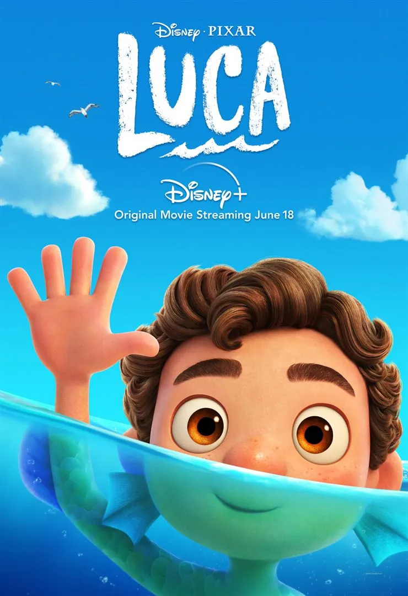

-
Melhores Filmes da Disney

- Luca
Descrição:
No filme acompanhamos uma história de amadurecimento sobre um jovem que vive um verão inesquecível repleto de sorvetes,
massas e passeios intermináveis de scooter. Luca compartilha essas aventuras com seu novo melhor amigo,
mas toda a diversão é ameaçada por um segredo profundamente bem guardado: eles são monstros marinhos de outro mundo, logo abaixo da superfície da água.
Clique aqui e veja outros melhores filmes da Disney
Filme Soul
Filme Toy Story